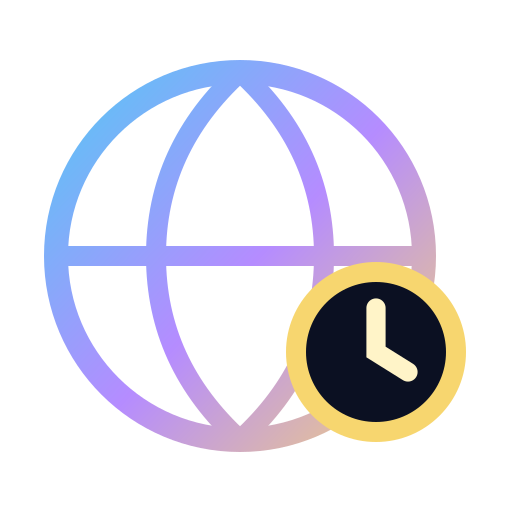
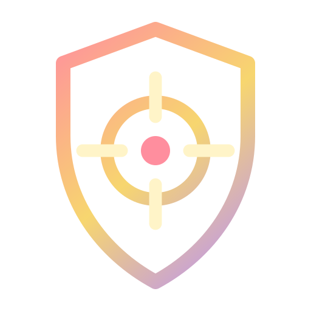

UUniversalAny gaming guild
CCommunityTibia guilds
FFounderLumina only
€Free or PremiumYour capacity
Meet the bot
Luminox is a Discord bot made of optional functions. Administrators configure only what their guild needs, and members use clear buttons and forms while the bot keeps panels and permanent records up to date.
How Luminox works
Luminox is a Discord bot, not a separate dashboard your guild must learn. Administrators run the setup commands; everyday users interact with the panels that appear in normal Discord channels.
Bot functions
Every card below opens a beginner explanation first. When you are ready to configure it, that page links to the exact technical guide.
Members

TimezonesShow shared times correctly for every member. FinderSuggest compatible teams from current online data.Activities
Guild operations

GuardsAlert defenders and record enemy battle time. RecruitmentReview genuine recruits and protected rewards. GuildhallPublish rooms and review character claims.Staff and administration
Which edition?
Choose Universal for game-independent Events, Support, Loyalty, moderation and administration. Choose Community when your guild needs verified characters, Tibia world rules, live online data, GuildBank, Tracker, Guards or Recruitment.
Choose the next step
Use Cases helps you choose the smallest useful starting setup. Docs gives administrators the exact commands, permissions and configuration order.